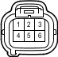

Код детали
Q31
Каталожный номер
90980-11034
Цвет
Синий
Технические характеристики
Жгуты проводов для ремонта

Система
Фонари заднего хода
Динамическая радарная система круиз-контроля (для моделей с 1GR-FE)
Динамическая радарная система круиз-контроля (для моделей с 1KD-FTV)
Освещение
Стоп-сигналы
Задние фонари
Указатели поворота и аварийная сигнализация (для моделей с правосторонним рулевым управлением)